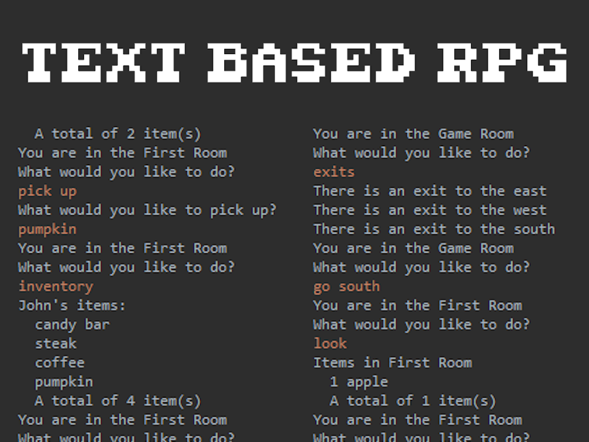

Oil Knight
May 2024
Mini Jam 159: Ocean
Project Overview
Explore the depths of a polluted sea as a cybernetic knight equipped with an oil-blasting laser gun. Clean up environmental disasters, navigate platforming challenges, and restore life to the ocean—one blast at a time.
Oil Knight is a 2D platformer created in Godot 4 for Mini Game Jam under the theme “Ocean.” You play as a deep-sea knight tasked with restoring the ocean from deadly oil spills. Armed with a pressurized oil laser, you explore underwater caverns, dodge sea creatures, and purify contaminated areas in this pixel-art platformer.
- Uses custom swimming physics in water with jump/dive support
- The player aims and fires a bullet that cleans toxic tiles or areas on contact
- Once a cleanup threshold is met, a gate or exit becomes available
- Tracks oxygen (air supply), oil energy, and cleanup progress
Player Movement:
Oil Cleanup:
Level Progression:
HUD:
Project Features
- 🧜♂️ Fluid underwater platforming movement with swimming mechanics
- 🔫 Oil Blaster mechanic to clean up pollution and interact with the environment
- 🧱 Level progression tied to environmental cleanup
- 🐠 Ambient underwater zones with parallax and pixel-art visuals
- 🎮 Full controller and keyboard support
- 🌌 Pixel-art HUD showing oxygen, oil meter, and cleanup progress
Gameplay
You dive into the ocean depths, navigating caverns while cleaning toxic spills using your oil laser. Each level contains polluted zones that must be fully cleaned to unlock the path forward. You’ll balance exploration, platforming precision, and shooting accuracy—all while keeping your oxygen and oil levels in check.
Controls:
- ↑ / W..............Move Up
- ↓ / S..........Move Down
- ← / A...........Move Left
- → / D.........Move Right
- Space / A (Gamepad).........Jump / Swim Up
- Mouse / Right Stick.........Aim
- Left Click.........Fire Oil Laser
- Esc / Start.........Pause Menu
Technologies Used
- 🧠 Godot 4 (GDScript)
- 🎨 2D pixel-art assets
- 🕹️ Controller and keyboard support
- 🎧 Background music using built-in AudioStreamPlayer nodes
Project Images
Below are some additional images showcasing the project.
Description of this image or feature.
Explanation about this feature.
More details about the project component.